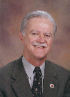

|
 Dr. Dunn returned to the University of Arkansas at
Monticello upon completion of his Ph.D. as an assistant professor of
political science. He assumed a position as an associate professor of
political science at the University of Central Arkansas (Conway) in
1975. In 1976, he became the chair of the Department of Political
Science at Central Arkansas, serving in that capacity until 1982. Also
in 1976, he was elected president of the Arkansas Political Science
Association. During his tenure as a professor of political science, Dunn
contributed several research articles and papers on political party
leadership, the effects of county government reform on political
marginals, and influencing policy in state legislative bodies. In 1982,
he was appointed director of governmental relations at Central Arkansas.
That role led to the development of a very successful approach to
winning support from lawmakers which combined the values and goals of
the academy with an effective lobbying style built on high integrity and
credibility. It was this experience which led to Dunn’s appointment as
president of Henderson State University in 1986. As president of Henderson, Dunn serves as the
institution’s chief executive officer. Reporting directly to a
seven-member board of trustees, his responsibilities include overall
direction of the university, planning, budgeting, personnel, and
external relations. He considers his greatest accomplishments at
Henderson as providing focus to the institution’s efforts, rebuilding
the infrastructure of the institution, and effectively representing the
university to many external constituencies. During his tenure, the
institution engaged in over $50 million in construction, renovation, and
major maintenance. He serves as a member of the NCAA President’s
Council and was elected chair of the Executive Council of the Arkansas
presidents and chancellors by his peers. Dr. Dunn is married to Dr. Jane Dunn, who currently
serves as an Assistant Professor of Biology at Henderson. They have four
children, two daughters and twin sons. Their daughter, Dr. Aimee Shouse,
is an assistant professor of political science at Western Illinois
University. One son, James, works for Vistana Resort in Orlando. Their
other son, Joseph, is a manager with the Wendy’s restaurant chain.
Their twelve-year old daughter, Mary, is an eighth grader who
participates in the junior-high gifted and talented program, softball,
music, and many other activities. |